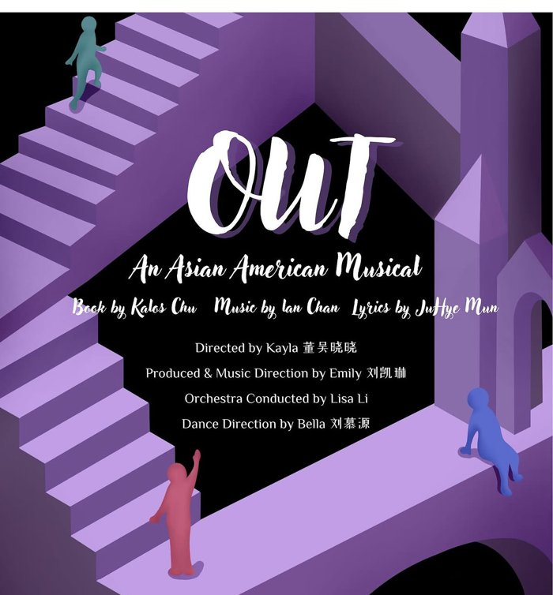
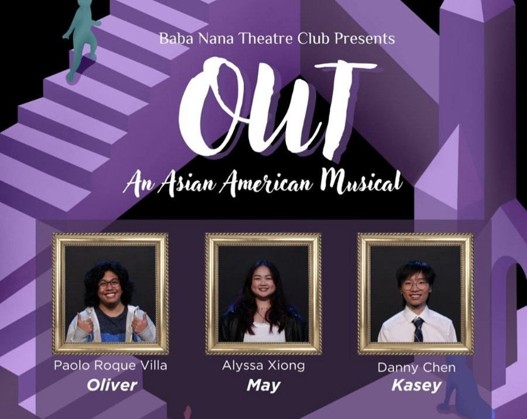
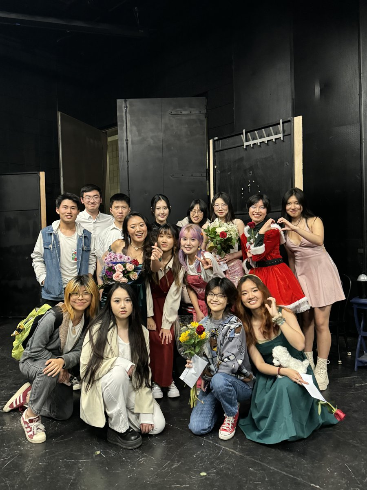

Producer / Co-Director / Music Director for two original Chinese-language musicals at UC Santa Barbara. No marketing angle here — this is the clearest evidence I have of running a real project: budget, timeline, cross-functional recruiting, and a room full of people depending on the schedule holding.
A friend and I co-founded and produced the club's first original Chinese-language musical, splitting the entire production between two people — with no existing playbook to follow.
We delivered a 1.5-hour show to 100+ audience members — a real, ticketed production, run by two students with no institutional template to follow.
The second year scaled the operation significantly: 36 cast and crew, a 2.5-hour show (up from 1.5), and a live band for the first time. As Producer and Music Director, I owned the full production timeline, from recruitment and auditions through three live performances.
We raised $6,000+ — more than double Year One — and closed with three sold-out performances totaling 400+ attendees.

The official show poster for Year 2 — book, music, and lyrics by student writers, directed and produced entirely by the club.

Part of the 36-person cast and crew recruited across departments and outside organizations.

Backstage after a sold-out show — the actual team behind the numbers above.
Strip away the theater context and this was running a small, time-boxed organization twice — the second time at nearly 1.5x the scale — with real constraints: a fixed performance date that couldn't move, a budget that had to be negotiated from scratch each year, and a team built almost entirely from cold outreach across departments I had no formal authority in.
It's not a marketing project, and I'm not framing it as one. It's the clearest single answer I have to "can you actually run something end to end, under real constraints, with people who don't report to you" — which is why it's here.